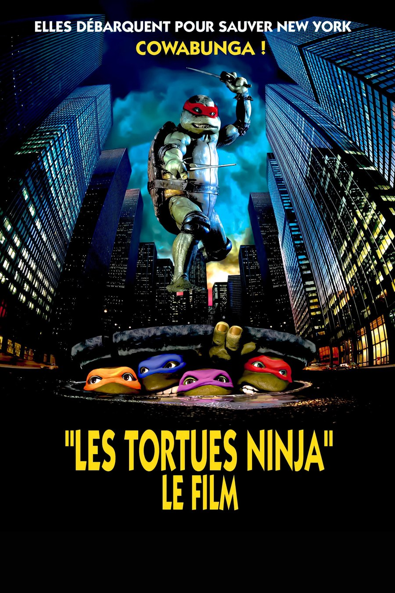
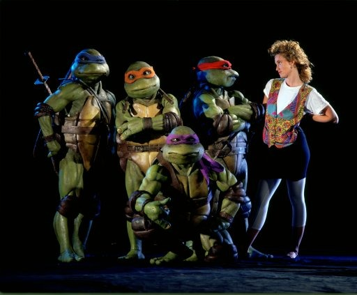
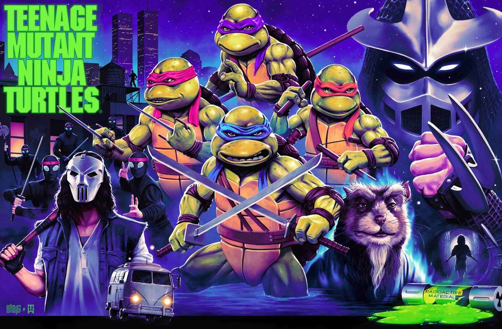

J'avais environ 9 ans quand j'ai découvert Les Tortues Ninjas. Le film avait été enregistré à la télé par mes parents, sur Canal+, au début des années 90.
J'étais fan du dessin animé. J'avais toute une collection de figurines et de produits dérivés de la série.
Ce qui m'a frappé à l'époque : les costumes, les décors, l'ambiance du film, assez sombre. Et surtout Shredder.
Je l'ai revu récemment, et rien n'a changé. J'avais les yeux qui brillaient, comme quand j'étais enfant.
Ce soir, on retrouve les Tortues Ninjas.

L'affiche des Tortues Ninjas
Les Tortues Ninjas, c'est Teenage Mutant Ninja Turtles en version originale. Un film d'action américain, réalisé par Steve Barron, sorti aux États-Unis le 30 mars 1990. Il dure 92 minutes.
Il est tiré des personnages créés par Kevin Eastman et Peter Laird. Le scénario est de Todd W. Langen et Bobby Herbeck.
Judith Hoag joue April O'Neil, et Elias Koteas, Casey Jones. Les quatre tortues sont jouées par des acteurs en costume, et doublées par d'autres voix. Kevin Clash fait vivre le maître Splinter. Shredder est interprété par James Saito.
Le film est produit par Golden Harvest, Limelight Productions et 888 Productions, et distribué par New Line Cinema. La musique est de John Du Prez.
Avec un budget de 13,5 millions de dollars, il en rapporte 202 millions dans le monde.
Avant d'exister, le film a eu du mal à trouver son chemin. Les créateurs, Kevin Eastman et Peter Laird, ont d'abord reçu des propositions étonnantes, dont celle d'un film avec des acteurs maquillés en vert. Ils choisissent finalement les costumes.
Beaucoup de grands studios refusent de distribuer le film, par peur de l'échec. New Line Cinema, alors une petite société indépendante, le rachète en cours de production.
Le scénario puise surtout dans les premiers comics de Mirage : l'origine des tortues, la bataille sur les toits, la ferme, le combat contre Shredder. Mais il garde ce que le dessin animé a apporté : les bandeaux de couleur, l'amour de la pizza, et April O'Neil en journaliste de télévision.
Les costumes des tortues, ce sont les ateliers de Jim Henson, la Creature Shop, à Londres. Ils sont faits en 18 semaines, avec des masques dont la bouche, les yeux et les sourcils sont animés par des mécanismes.
Le tournage a lieu de juillet à septembre 1989, surtout en Caroline du Nord, où l'on reconstruit des toits de New York. Une équipe tourne aussi à New York, au World Trade Center, à Times Square, à l'Empire State Building.
Le film sort aux États-Unis le 30 mars 1990. Le premier week-end rapporte plus de 25 millions de dollars, un record pour un film indépendant. Au total, plus de 200 millions dans le monde.
La sortie en VHS suit le 4 octobre 1990.

Les Tortues Ninjas
New York est en pleine vague de crimes. Des vols en série, et personne ne sait qui est derrière.
April O'Neil, journaliste à la télévision, mène l'enquête. Elle soupçonne le Foot, un gang de ninjas : des adolescents devenus voleurs. En s'approchant d'eux, elle attire l'attention du chef de la police, Sterns, et surtout celle de leur chef, Shredder, qui lance ses hommes à ses trousses.
Elle est sauvée par quatre tortues : Leonardo, Donatello, Michelangelo et Raphael. Elles vivent dans les égouts et protègent la ville comme des justiciers masqués. Leur père adoptif, Splinter, un rat, leur a enseigné le ninjutsu. Il raconte à April leur histoire : lui et les tortues ont été mutés par un mystérieux produit chimique, qui a fait d'eux des créatures intelligentes.
Sur la route des tortues, un autre justicier : Casey Jones, un ancien joueur de hockey sur glace, qui croise Raphael.
Face à Shredder, ils vont devoir s'allier.
Le film fait un pari : prendre les tortues du dessin animé et les replonger dans l'univers des premiers comics.
Le scénario s'appuie surtout sur les premiers comics de Mirage : l'origine des tortues, la bataille sur les toits, la ferme, le combat contre Shredder. Mais il garde ce que le dessin animé a apporté : les bandeaux de couleur, l'amour de la pizza, et April O'Neil en journaliste de télévision.
Le résultat, c'est une comédie de super-héros. Variety salue un humour pince-sans-rire et des combats « amusants et extravagants ». Empire parle d'une aventure « très drôle ».
Mais ce qui frappe, c'est la matière. Les tortues sont des acteurs en costume, fabriqués à Londres par la Creature Shop de Jim Henson, avec des visages animés par des mécanismes. Pour Janet Maslin, sans ces costumes, il n'y aurait eu aucun film. Et ce sont ces costumes, avec les décors, qui m'avaient frappé enfant.
La critique, elle, est partagée. Roger Ebert donne 2,5 sur 4 et y voit probablement le meilleur film possible pour les fans. Owen Gleiberman lui met un F. Sur Rotten Tomatoes, 46 % de critiques favorables.
Certains reprochent aussi le traitement des méchants, des Asiatiques : Variety et Maslin parlent d'un « péril jaune » joué à fond. Ebert n'y voit pas de racisme.
Quant aux créateurs, Kevin Eastman dira en 2022 que c'est toujours la meilleure adaptation.

Les héros et Shredder, en illustration
Pourquoi Les Tortues Ninjas est-il devenu un classique ? Plusieurs faits permettent de l'expliquer.
D'abord, le succès. Beaucoup de grands studios avaient refusé de le distribuer, par peur de l'échec. Pourtant, il ouvre avec plus de 25 millions de dollars lors de son premier week-end, un record pour un film indépendant. Il finit à plus de 200 millions dans le monde, neuvième plus gros succès de 1990.
Ensuite, la matière. Des costumes bluffants, signés Jim Henson, et un scénario qui mêle les premiers comics et le dessin animé : de quoi réunir les fans des deux.
Puis la vidéo. Sorti en VHS le 4 octobre 1990 aux États-Unis, le film atteint la quatrième place du marché de la vidéo. Chez moi, c'était une cassette enregistrée à la télé par mes parents.
Enfin, la reconnaissance de ses créateurs. Peter Laird salue le film dans un documentaire en 2014. En 2022, Kevin Eastman dit que c'est toujours la meilleure adaptation. Et en 2025, une reprise en salle rapporte 3,3 millions de dollars en une semaine.
Un film parfait ? Pas pour tout le monde. Mais pour beaucoup d'entre nous, un repère.
Pourquoi remettre Les Tortues Ninjas dans le lecteur ?
D'abord pour la matière. Ces costumes en latex, avec des visages animés par des mécanismes, créés par la Creature Shop de Jim Henson, font partie d'une époque où tout se faisait à la main. Le film le doit à ses artisans : pour la critique Janet Maslin, sans eux, il n'y aurait pas eu de film.
Ensuite, pour ce mélange. Les premiers comics, le dessin animé, la pizza, les bandeaux de couleur, April en journaliste : tout est là, et ça fonctionne. Même Roger Ebert y voit probablement le meilleur film possible pour les fans.
Pour l'humour aussi. Variety parle d'un humour pince-sans-rire et de combats amusants et extravagants. Empire d'une aventure très drôle.
Pour New York, enfin : une partie a été tournée sur place, au World Trade Center, à Times Square, à l'Empire State Building. Le reste, en Caroline du Nord, sur des toits reconstruits en studio.
Et puis pour la nostalgie. Quand je l'ai revu récemment, rien n'avait changé. J'avais les yeux qui brillaient comme quand j'étais enfant.
Alors si vous avez grandi avec les tortues, ou si vous ne les avez jamais vues au cinéma, remettez la cassette.
Les Tortues Ninjas, ce n'est pas qu'un film de super-héros. C'est une cassette enregistrée sur Canal+ par mes parents, quand j'avais environ 9 ans. Des figurines alignées sur une étagère. Et un Shredder qui m'avait marqué.
C'est aussi un film que beaucoup de studios avaient refusé, devenu un succès à plus de 200 millions de dollars. Et des costumes faits à la main, qui n'ont pas pris une ride dans mon souvenir.
Alors si vous avez grandi avec les tortues, ou si vous ne les avez jamais vues au cinéma, remettez la cassette.
Celle-ci est dans le lecteur. On rembobine.
Titre original
Teenage Mutant Ninja Turtles
Pays
États-Unis
Genre
Action · Comédie · Super-héros
Durée
92 min
Producteur
Golden Harvest · Limelight · 888 Productions · New Line Cinema
Avec aussi
Kevin Clash · James Saito · Raymond Serra
D'après
Les comics de Kevin Eastman et Peter Laird
Note
Enregistré par mes parents sur Canal+
SOMEDAY — S3 EP. 10